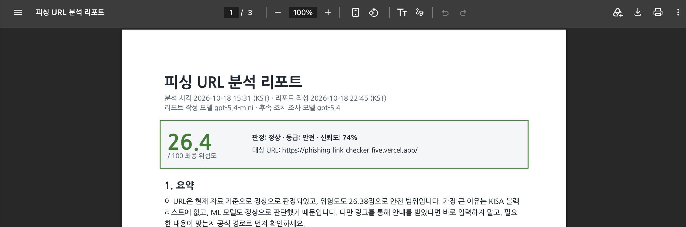

코디세이 AI 네이티브 Final Project
URL 피싱
확률 분석
받은 링크를 눌러도 되는지,
지금 무엇을 해야 하는지 알려 주는 서비스
김수아 장은서 박채린 최성주
phishing-link-checker-five.vercel.app
피싱에 자주 쓰이는 주소 끝자리예요
링크를 누르지 말고 받은 메시지를 삭제하세요.
팀원 및 역할
팀장 / PM
김수아
- 일정 관리, QA 총괄
- 문서화, 배포 관리
- 멘토링 피드백 반영
프론트엔드
장은서
- 결과 화면·분석 기록 UI
- 입력 검증
- 모바일·접근성, 프론트엔드 QA
백엔드
박채린
- API 설계
- DB·접근 제어
- 공유·삭제 기능, 백엔드 QA
AI
최성주
- ML 모델 학습·평가
- RAG·LLM 설명 파이프라인
- AI QA
이 링크, 눌러도 될까요?
일반 사용자는 스스로 판단할 수 없어요
공공기관·은행을 흉내 낸 주소는 봐도 무엇이 이상한지 알기 어렵습니다.
기존 도구는 일반 사용자에게 맞지 않아요
VirusTotal은 전문가용이고, 금융 앱의 확인 기능은 그 앱 안에서만 쓸 수 있습니다.
판정만으로는 부족해요
필요한 건 점수가 아니라 "눌러도 되는지"와 "이미 눌렀다면 무엇부터 할지"입니다.
타겟을 다시 정했습니다
보안 지식이 있는 사용자까지
점수, 신뢰도, 글자별 위험 기여도처럼 기술 정보가 결과 맨 위에 있었어요.
받은 링크를 스스로 판단하기 어려운 일반 사용자
쉬운 판정, 지금 할 일, 믿을 수 있는 근거, 공식 신고처가 필요해요.
ML 단독 오탐률이 34.2%라서 전문가용 판정 도구로 경쟁하기보다,
일반 사용자가 이해하고 행동하도록 돕는 쪽의 가치가 더 크다고 판단했습니다.
기존 서비스와 무엇이 다른가요
| 기존 서비스 | 우리 서비스 |
|---|---|
| 판정 결과를 나열 | 3단계 판정 + 한 줄 이유 + 지금 할 일 하나 |
| 판정 후 안내 없음 | "이미 눌렀다면?" 상황별 조치와 118·112·1332 연결 |
| AI 설명의 출처가 불분명 | 모든 문장에 출처 번호, 근거 없는 문장은 자동 차단 |
| 사이트에 접속해 검사하기도 함 | 의심 사이트에 접속하지 않고 공개 기록만 조회 |
AI는 판정하지 않습니다
KISA 목록 · ML 모델 · 규칙
같은 입력에는 항상 같은 결과가 나오고, 평가 세트로 성능을 측정할 수 있어요.
생성형 AI
이미 정해진 판정의 근거를 쉬운 말로 설명하고 리포트를 작성해요. 점수 계산에는 들어가지 않아요.
AI에 판정까지 맡기면, 설명이 그럴듯할수록 틀린 판정을 믿게 됩니다.그래서 프롬프트에 "판정은 이미 끝났고 당신은 판정하지 않습니다"를 명시했습니다.
판정은 이렇게 이루어집니다
1단계
KISA 피싱 목록
일치하면 바로 위험 확정. 카카오톡 채널처럼 여럿이 쓰는 주소는 신고된 경로까지 일치할 때만
일치 → 바로 위험
2단계
ML 모델
URL의 3~5글자 조합(n-gram)으로 0~100점 위험도 계산
3단계
규칙 보정
공식 도메인 약 500개는 최대 25점, 단축 URL은 주의, 공식 주소를 흉내 낸 글자는 위험
학습 데이터의 편향부터 고쳤습니다
처음 모델은 "https://www.로 시작하면 정상"이라는 지름길을 배워 무작위보다 못했어요. 정상 URL의 형태를 고르게 바꿔 다시 학습했습니다.
(랜덤 포레스트)문자 n-gram+ 편향 보정+ URL 정규화
외부 평가 세트 ROC-AUC (피싱 2,000건, 정상 409건, 학습 데이터와 도메인 분리)
오탐률, ML 단독
34.2%
오탐률, 서비스 전체
2.0%
미탐률
10.3%
서비스 전체 ROC-AUC
0.978
서비스 전체 오탐률은 평가 세트 정상 URL의 81.2%가 공식 도메인이라 낙관적인 값이에요. 처음 보는 사이트는 ML 단독 수치로 봐야 합니다.
AI 설명에는 모두 출처가 붙습니다
탐지 근거와, 검색한 공식 기관 가이드 10건(KISA·금융감독원·경찰청 등)에 번호를 붙여 AI에 넘겨요.
[E3] '.xyz'는 피싱에 자주 쓰이는 최상위 도메인입니다.
피싱 URL의 11.3%, 정상 URL의 0.1%에서 나타남
[대응 가이드]
[G1] 링크 대신 공식 경로로 확인하기 (KISA 보호나라)
AI 설명
피싱에 자주 쓰이는 주소 끝자리를 사용했습니다 [E3].
링크 대신 공식 앱으로 확인하세요 [G1].
서버가 다시 검사해요
- 출처 번호가 없는 문장템플릿으로 교체
- 목록에 없는 번호템플릿으로 교체
- 근거에 없는 숫자템플릿으로 교체
- 전화번호, 웹사이트 주소템플릿으로 교체
숫자는 근거에 있는 것만 쓸 수 있어서, AI가 "피싱 확률 95%" 같은 숫자를 지어낼 수 없어요.
리포트, 그리고 계속 정확해지는 구조
다단계 AI 리포트 (PDF)
후속 조치 조사(gpt-5.4) → 리포트 작성(gpt-5.4-mini) → 신고처·연락처는 서버가 검증된 값으로 넣기

"이 판정이 틀렸나요?"
자동으로 반영하지 않는 이유: 피싱 사이트를 "안전"이라고 반복 신고하는 조작을 막기 위해서예요.
시스템 구성
사용자
React 19 + Vite
Vercel
FastAPI
판정, 근거 수집, RAG, 리포트, 의견 처리
Render · PostgreSQL
Claude
출처 붙은 설명
OpenAI 호환 API
후속 조치 조사, 리포트
RDAP · crt.sh · DNS
도메인 이름만 전송
Resend
의견 알림 메일
ML
scikit-learn
문자 n-gram + 로지스틱 회귀
RAG
TF-IDF 가이드 검색
특징 기반 유사 사례
LLM
Claude
gpt-5.4, gpt-5.4-mini
배포
Render(유료), Vercel
GitHub 브랜치 자동 배포
피드백으로 바뀐 것
10월 10~11일
팀 내부 QA
대소문자 우회, 단축 URL, 입력 검증, 접근 제어, 모바일 화면
10월 12일
전문가 멘토링
타겟, 방향성, 차별점, 서비스로서의 발전 방향
10월 12일
베타 테스트 5명
학과 교수, 연구회 선배 등 전공자와 비전공 일반인
| 수치와 기술 용어가 많아 이해하기 어려움 | 맨 위에 3단계 판정과 지금 할 일, 근거는 접는 카드로 |
| 이미 눌렀을 때의 안내가 없음 | 상황별 조치와 공식 신고기관 연결 |
| 공식 사이트(국민건강보험공단 등)가 위험으로 판정됨 | 목록 점검으로 KISA 목록 속 공용·공식 주소 오류를 찾아 수정 |
베타 테스터 만족도 3.1→4.5/ 5
안전하게 쓸 수 있도록
AI 신뢰성
- AI는 설명만 맡고 판정하지 않아요
- 신고 전화번호처럼 틀리면 위험한 정보는 서버가 검증된 값으로 넣어요
- AI가 쓴 설명에는 작성한 모델과 출처 번호를 표시해요
- 안전 판정에도 "안전을 보장하지는 않아요"를 함께 보여 줘요
개인정보와 안전
- 의심 사이트에 접속하지 않아요
- 성명·식별 암호는 해시로만 저장하고, 기록은 90일 뒤 자동 삭제해요
- 로그와 메일에서는 URL의 '?' 뒤를 가려요
성과와 앞으로의 계획
0.393 → 0.879
외부 평가 ROC-AUC
0.15초
LLM 설명 제외 분석 시간 (로컬 측정)
약 320개
백엔드 자동 테스트
다음 단계
- 도메인 등록일 같은 평판 신호를 점수에 반영해, 미탐의 98.5%를 차지하는 짧은 무작위 도메인 잡기
- 승인된 의견으로 월 1회 재학습
- 단축 URL의 실제 목적지를 안전하게 확인하기
감사합니다
누구나 받은 링크 앞에서 안심하고 판단할 수 있도록.
서비스 phishing-link-checker-five.vercel.app
저장소 github.com/suahimnida/Phishing-Link-Checker